Hole Relative Difficulty Analysis
Contents
Each hole on a golf course has an assigned Stroke Index which is used as an indicator of the relative difficulty of a hole compared to other holes on the same course. This index is typically assigned based on a combination of objective factors (such as hole length, fairway width, and green size,) and subjective factors (such as terrain, proximity to out-of-bounds and/or water, tree coverage, and the number and placement of hazards, such as bunkers.) The Stroke Index for each hole is given on the score card, and is used to assign strokes to a hole during handicap based competitions.
However, have you ever wondered which holes on our course play the hardest based on actual shots taken and scores submitted? Or the relative difficulty of the front nine compared to the back nine?
The analysis that follows attempts to address these questions.
The Data
The analysis performed uses actual hole scores submitted by members through the Golf Canada score entry portal for 2021 to 2025.
Since the relative difficulty of holes is potentially different for golfers with low, mid and high handicaps, for men and women, and from the front and back tees, the analysis has been split into the following categories:
- Men from the white/blue tees, split further into golfers with either an extra-low, low, mid or high handicap
- Women from the red/yellow tees, split further into golfers with either a low, mid or high handicap
There were very few scores submitted for men off the front tees and women off the back tees. Hence no statistically significant conclusions could be drawn for these cases, and they are not analysed here. Similarly, there are a small number of golfers with higher handicaps than 36 for the men and 64 for the women. They have been removed from the analysis as there are too few rounds to draw any firm conclusions from them.
Also, any scores that are more than twice par have been saturated down to be twice par. These scores are rare and unnecessarily bias the score averages. And finally, only rounds by golfers who played at least 10 rounds are included.
The following two images show the definition of extra-low, low, mid and high handicaps. Note that the definition is different for men and women. The vertical blue bars show the number of rounds played by golfers with a given handicap. The black text, in combination with the red vertical lines, show how the handicap ranges have been defined. For instance, Figure 1 shows that a man playing the white/blue tees is defined as a mid-handicapper if their handicap is between 9 and 18, while Figure 2 shows that a woman playing the red/yellow tees is defined as a mid-handicapper if their handicap is between 18 and 36.
For both men and women it's not too surprising to see that there are more rounds played by golfers with a specific mid-handicap than with either a specific low or high handicap.
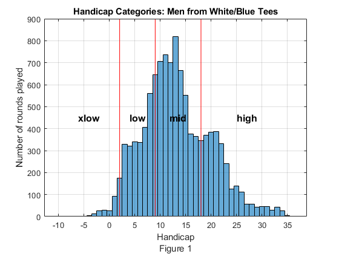
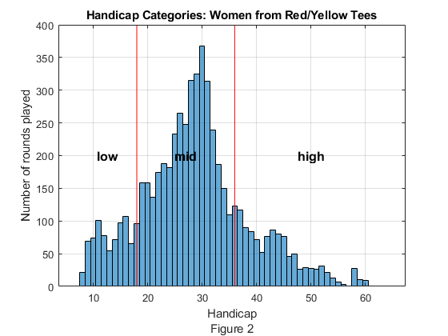
To simplify the analysis, the front and back nine scores have been amalgamated. That is, holes 1 and 10 are assumed to be identical, as are holes 2 and 11, etc., through to holes 9 and 18. A consequence of this is that if a golfer played 18 holes, then for the purposes of counting rounds, that would count as two (2) 9-hole rounds played. In total there are 16778 9-hole rounds in the data. Athough this isn't strictly speaking accurate - especially with the recent front tee added to hole 7 - the overall trends in the data still hold.
Which Holes are the Most Difficult?
In this section we answer the question of which holes are the most difficult based on average score relative to par. That is, an average score relative to par of 0 represents shooting par, while +1 would be a bogey, -1 would be a birdie, etc.
The following table and plots show the average score to par for each handicap group on each hole of the course. These show some expected and some surprising results.
For the table, each row represents a different handicap group. For the plots, each line represents a different handicap group; the x-axis shows the hole number; and the y axis shows the average number of shots relative to par.
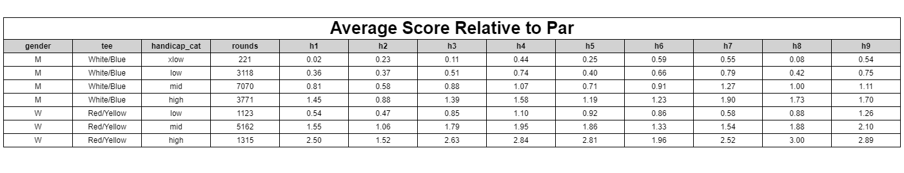
For mid-handicap men (Figure 3, the orange line) the 7th hole is generally the hardest, followed by the 9th and 4th holes (which have a similar difficulty level.) The easiest hole is the 2nd, followed by the 5th. None of this is a surprise, and matches closely the assigned Stroke Index given to the holes.
What might be surprising is that the 1st and the 8th, the longest holes, have very different difficulty levels. This is perhaps due to the different topology of the holes, with the 1st being markedly downhill while the 8th is slighly uphill.
What is perhaps initially surprising is that for those with an extra-low handicap (the purple line,) the hardest hole is the 6th, not the 7th. Similarly, the 2nd hole is not the easiest. Rather the longer par 5's (the 1st and the 8th,) along with the nearly drivable 3rd hole, are the easiest. This is no doubt due to their ability to often reach these greens, or get very close to them, in 2 shots (or one shot for the 3rd hole.) The average score to par for these three holes is near zero, indicating that they are often birdied by our most skillful players. This somewhat mirrors the data for top professional golfers where par 5's and drivable par 4's are often the easiest holes on a course, and it's not unusual for par 3's to be amongst the hardest.
The converse is also true: for higher handicap men the long holes are the most difficult. The 7th, 8th and 9th all proving to be difficult holes. The exception is the 1st, which again may be explainable by it being predominantly downhill and hence more easily reachable in 3 shots for these players.
Similar results hold for our women golfers (Figure 4) with the exception of the 7th which played as a par 5 for the women for the first 4 years of data being analysed, so is an easier hole than it is for the men.
Once again we see that the 2nd hole is clearly the easiest for all handicap levels. However, there are mixed results on the 6th hole, with it being relatively easy for the high handicap players, but not for the low handicap players.
As with the men, the women find that the 1st hole is relatively easy compared to the 8th hole despite them both being par 5's. Again, this is likely down to the different topology of the two holes.
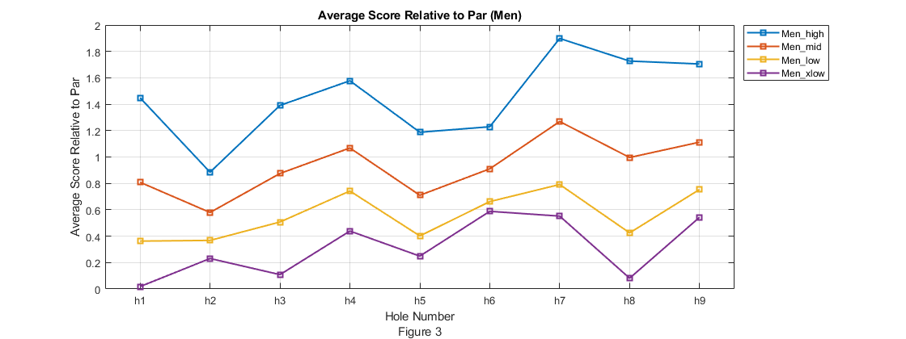
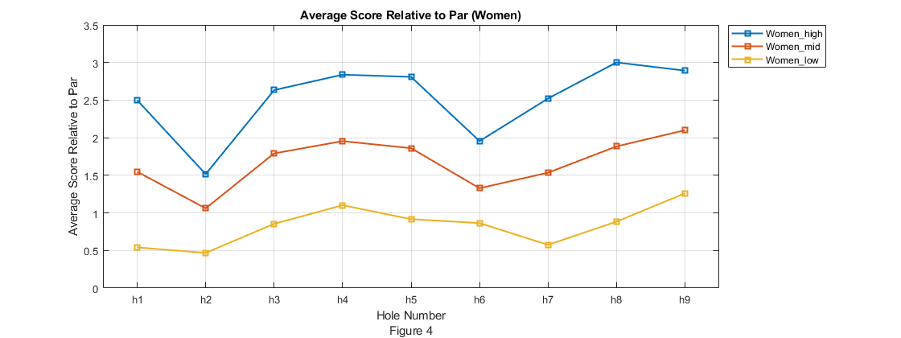
The Front Nine Versus the Back Nine
Do players get fatigued and score worse on the back nine? Or do they just warm up on the front nine ready to go low on the back nine?
There are 5002 18-hole rounds in the data which can be used to help answer these questions. This is done by looking at the difference in scores on each nine for a player playing the front nine and then playing the back nine.
Figure 5 shows a histogram of this difference. The x-axis shows the difference in scores on the front nine compared to the corresponding score on the back nine. A positive number indicates rounds where the score on the front nine is higher than the score on the back nine, while a negative number indicates rounds where the score on the front nine is lower than the score on the back nine. The y-axis shows the number of times that a particular difference in score has occurred.
The closer that front nine and back nine scores are (for a player playing 18 holes) the taller and more central this histogram would be. That is, it would have less spread to the left and right. If there are the same number of players who score X strokes better on the back nine, as there are players who score X strokes worse on the back nine, then the histogram would be symmetric about a Strokes Difference of zero.
Quite often there is a scoring difference between the nines of 4 or 5 strokes (both positive and negative), and sometimes there is a scoring difference of 10 to 15 strokes (both positive and negative.) But the histogram generally shows that for every golfer who has a terrible front nine followed by a great back nine there is another golfer who has a great front nine followed by a terrible back nine.
From a casual visual inspection, the histogram appears to be centred nearer -1, which would indicate that players score 1 shot lower on the front nine than they do on the back nine.
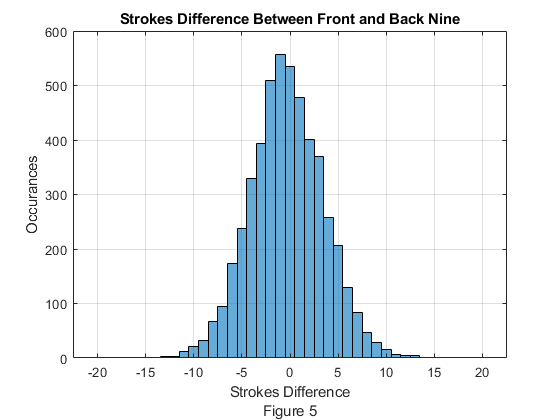
Eye-balling the histogram is a good way to get an initial feel for differences in scoring between the two nines. However, the difference can be quantified formally by performing a statistical analysis on the average of the score differences.
Figure 6 shows that the average score difference is -0.29. That is, the front nine scores are better than the back nine scores by an average of about a one-third of a shot per 18-holes played.
There is a 95% confidence interval on this result ranging from -0.19 to -0.39. Since zero does not lie between -0.19 and -0.39, we can say with 95% confidence that there is a difference between scoring on the two nine's, and that scoring on the front nine is marginally better than scoring on the back nine (for players who play 18 holes in one round.) However, for all intents and purposes the difference is insignificant - and may just be attributable to the slightly different tee locations between the two nines.
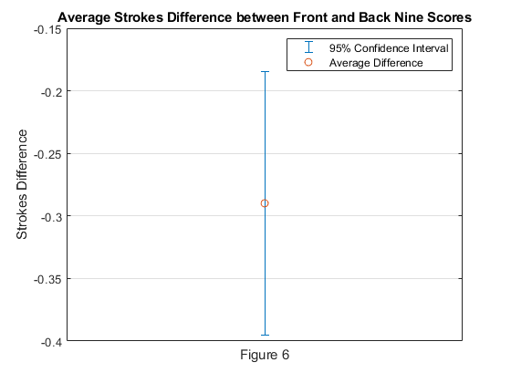
To summarize, as you make the turn you are most likely to make an identical score on the back nine as you had on the front nine. That's good news if you've had a great outward nine, but not so good if you've just had a disastrous nine.
Nonetheless, you can take comfort in knowing that there are many instances where there is a noticeable improvement on the back nine - and you should aim to add to that tally.
A Deeper Dive into the Data
The following plots are provided for those who are interested in diving more deeply into the analysis than just looking at average scores to par. Specifically, these plots allow you to look at more detailed summary statistics such as min, median and max scores per hole, as well as the spread of scores as measured by the 1st, 25th, 75th and 99th percentile of scores. As above, these are split by gender/tee and handicap group.
This more detailed look is presented using a graphical format called a box plot. The following image shows the core features of a box plot.
Various statistical information for each hole is represented on the box plot. In particular it is possible to see the average score, and the median score. (The median score is the score at which 50% of recorded scores are above this score, and 50% are below it.) It is also possible to see the range of scores that encompass the middle 50% of scores and 98% of scores.
From a box plot it is possible to quickly see and compare average scores, the most common scores, and various other comparative statistics.
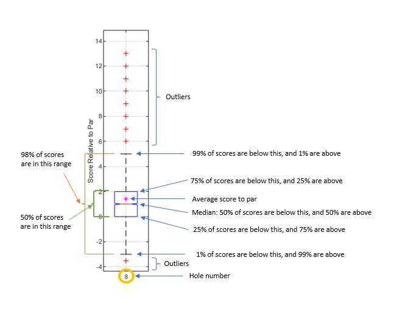
Once again, all scores are plotted relative to par. So the y-axis represents scores relative to par for the given hole.
The title across the top of each Figure shows the category being displayed. For example, the title "Score relative to Par (M, White/Blue Tee, mid-handicap)" should be interpreted as Male players, playing from the White/Blue tees, who have a mid-handicap.
From each plot it is possible to determine the relative difficulty of each hole for a player with a given handicap playing from the specified tees. For instance, refering to Figure 9, for Men with a mid-handicap playing from the back tees, and looking at the average scores (i.e. the magenta asterix in each box) it is posible to see that the 7th hole is the hardest hole, followed by the 9th and then the 4th and 8th (although these two holes are very similar.) Conversely, the 2nd hole is the easiest, with the 5th being the second easiest. This is relatively consistent with the Stroke Index assigned to those holes.
On the other hand, refering to Figure 12, for Women with a mid-handicap playing from the front tees, the 9th holes is the hardest, closely followed by the 4th. The 7th hole is this group's third most difficult hole (compared with it being the hardest hole for the mid-handicap men from the back tees.) This difference is most likely due to it being a par 5 for the women over the first 4 years of data, compared with it being a par 4 for the men. Once again the 2nd hole is clearly the easiest.
Conclusions on relative hole difficulty for other gender and handicap groups can similarly be drawn from the other figures.
Score Relative To Par (M, White/Blue Tee, xlow-handicap)
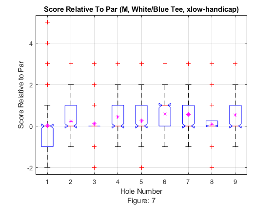
Score Relative To Par (M, White/Blue Tee, low-handicap)
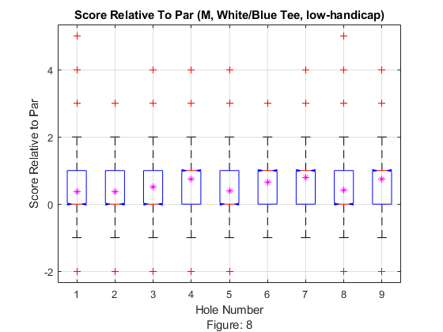
Score Relative To Par (M, White/Blue Tee, mid-handicap)
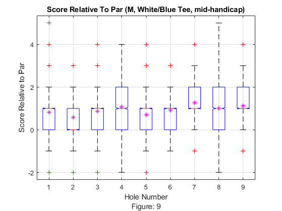
Score Relative To Par (M, White/Blue Tee, high-handicap)
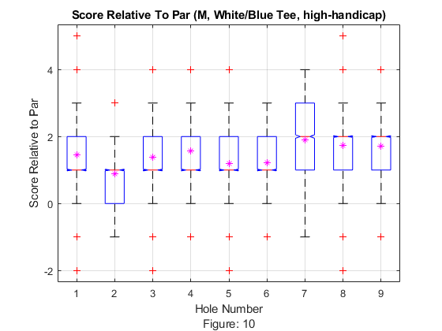
Score Relative To Par (W, Red/Yellow Tee, low-handicap)
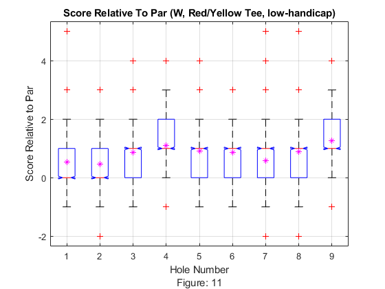
Score Relative To Par (W, Red/Yellow Tee, mid-handicap)
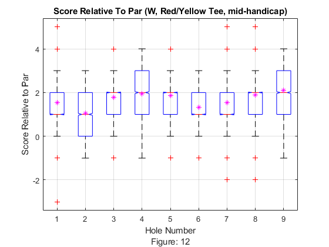
Score Relative To Par (W, Red/Yellow Tee, high-handicap)
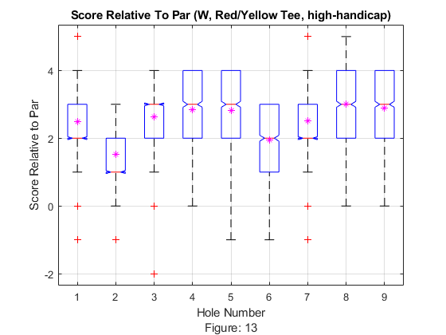